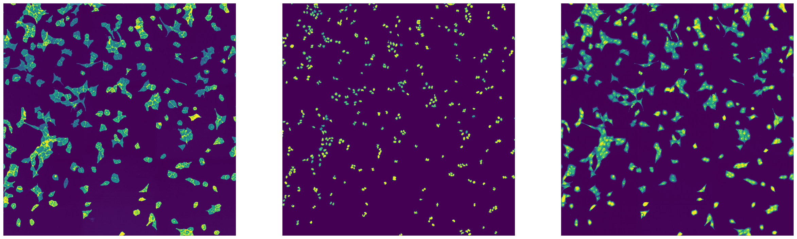
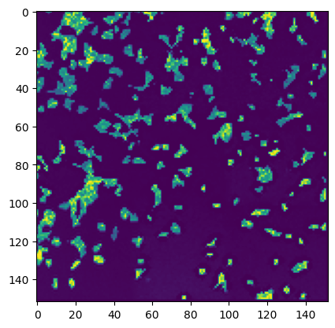
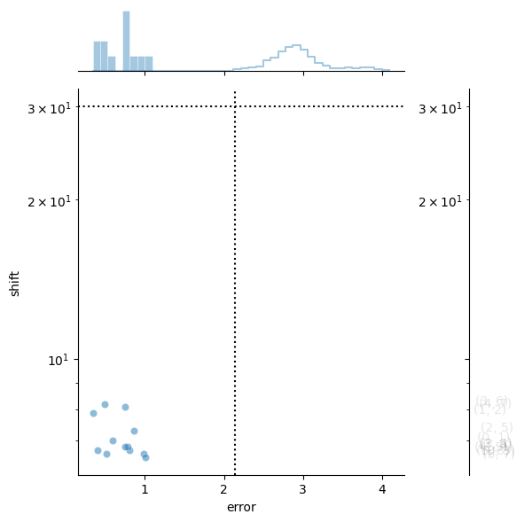
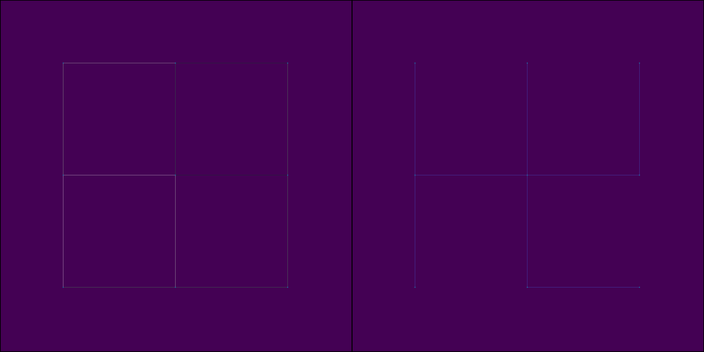

Example Stitching Notebook#
[1]:
import os
os.environ["JAVA_HOME"] = "/Users/sophia/mambaforge/envs/scPortrait/lib/jvm"
import matplotlib.pyplot as plt
from scportrait.data._datasets import dataset_stitching_example
from scportrait.tools.stitch import ParallelStitcher, Stitcher
/Users/sophia/mambaforge/envs/scPortrait/lib/python3.10/site-packages/tqdm/auto.py:21: TqdmWarning: IProgress not found. Please update jupyter and ipywidgets. See https://ipywidgets.readthedocs.io/en/stable/user_install.html
from .autonotebook import tqdm as notebook_tqdm
Single-threaded Stitching#
initializing the stitcher object#
[3]:
input_dir = dataset_stitching_example()
slidename = "stitching_test"
outdir = os.path.join(input_dir.replace("stitching_example", "example_projects/stitching"), slidename)
row = str(2).zfill(2) # specify the row of the well you want to stitch
well = str(4).zfill(2) # specifc the well number you wish to stitch
zstack_value = str(1).zfill(
3
) # specify the zstack you want to stitch. for multiple zstacks please make a loop and iterate through each of them.
timepoint = str(1).zfill(3) # specifz the timepoint you wish to stitch
pattern = f"Timepoint{timepoint}_Row{row}_Well{well}_{{channel}}_zstack{zstack_value}_r{{row:03}}_c{{col:03}}.tif"
# initialize stitcher
stitcher = Stitcher(
os.path.abspath(input_dir),
slidename,
outdir,
pattern=pattern,
stitching_channel="Alexa488",
overlap=0.1,
max_shift=30,
filter_sigma=0,
rescale_range={"Alexa488": (1, 99), "DAPI": (1, 99), "mCherry": (1, 99)},
overwrite=True,
)
Output directory created at: /Users/sophia/Documents/GitHub/scPortrait/scportrait_data/example_projects/stitching/stitching_test
Generating thumbnails#
[4]:
stitcher.generate_thumbnail()
assembling thumbnail 9/9
[5]:
# thumbnail is saved in the stitcher object and can be accessed via stitcher.thumbnail
plt.imshow(stitcher.thumbnail)
[5]:
<matplotlib.image.AxesImage at 0xb0335b520>
[6]:
# alterantively it can be saved to a tif file
stitcher.write_thumbnail()
[7]:
stitcher.initialize_reader()
Generating full-scale stitched image#
[8]:
stitcher.stitch()
performing stitching on channel Alexa488 with id number 0
quantifying alignment error 1000/1000
aligning edge 12/12
WARNING:root:Folder /var/folders/35/p4c58_4n3bb0bxnzgns1t7kh0000gn/T/temp_mmap_w8wfx989 with temp mmap arrays is being deleted. All existing temp mmapp arrays will be unusable!
WARNING:root:New temp folder location. Temp mmap arrays are written to /Users/sophia/Documents/GitHub/scPortrait/scportrait_data/example_projects/stitching/stitching_test/temp_mmap_s16co0a1. Cleanup of this folder is OS dependant, and might need to be triggered manually!
Alignment complete.
assembling mosaic with shape (3, 3040, 3038)
created tempmmap array for assembled mosaic at /Users/sophia/Documents/GitHub/scPortrait/scportrait_data/example_projects/stitching/stitching_test/temp_mmap_s16co0a1/temp_mmap_4464623890994857332.hdf
0%| | 0/3 [00:00<?, ?it/s]
merging tile 9/9
33%|███▎ | 1/3 [00:00<00:01, 1.01it/s]
merging tile 9/9
67%|██████▋ | 2/3 [00:02<00:01, 1.01s/it]
merging tile 9/9
100%|██████████| 3/3 [00:03<00:00, 1.02s/it]

[9]:
# the stitched image is saved in the stitcher object and can be accessed via stitcher.assembled_mosaic
stitcher.assembled_mosaic
[9]:
|
||||||||||||||||
[10]:
# the stitched image can then be written to a variety of output formats
stitcher.write_tif(export_xml=True)
stitcher.write_ome_zarr()
[11]:
import matplotlib.pyplot as plt
from tifffile import imread
fig, axs = plt.subplots(1, 3, figsize=(30, 10))
axs[0].imshow(imread(f"{outdir}/stitching_test_Alexa488.tif"))
axs[0].axis("off")
axs[1].imshow(imread(f"{outdir}/stitching_test_DAPI.tif"))
axs[1].axis("off")
axs[2].imshow(imread(f"{outdir}/stitching_test_mCherry.tif"))
axs[2].axis("off")
[11]:
(-0.5, 3037.5, 3039.5, -0.5)

[12]:
del stitcher
Multi-threaded Stitching#
Using the ParallelStitcher class stitching can be speed up by using multiple threads. The code to perform stitching remains more or less the same.
initializing the stitcher object#
[14]:
input_dir = dataset_stitching_example()
slidename = "stitching_test_parallel"
outdir_parallel = os.path.join(input_dir.replace("stitching_example", "example_projects/stitching"), slidename)
row = str(2).zfill(2) # specify the row of the well you want to stitch
well = str(4).zfill(2) # specifc the well number you wish to stitch
zstack_value = str(1).zfill(
3
) # specify the zstack you want to stitch. for multiple zstacks please make a loop and iterate through each of them.
timepoint = str(1).zfill(3) # specifz the timepoint you wish to stitch
pattern = f"Timepoint{timepoint}_Row{row}_Well{well}_{{channel}}_zstack{zstack_value}_r{{row:03}}_c{{col:03}}.tif"
# initialize stitcher
stitcher = ParallelStitcher(
input_dir,
slidename,
outdir_parallel,
pattern=pattern,
stitching_channel="Alexa488",
overlap=0.1,
max_shift=30,
filter_sigma=0,
rescale_range={"Alexa488": (1, 99), "DAPI": (1, 99), "mCherry": (1, 99)},
overwrite=True,
threads=12,
)
Output directory created at: /Users/sophia/Documents/GitHub/scPortrait/scportrait_data/example_projects/stitching/stitching_test_parallel
Generating thumbnails#
[15]:
stitcher.generate_thumbnail()
assembling thumbnail 9/9
[16]:
# thumbnail is saved in the stitcher object and can be accessed via stitcher.thumbnail
plt.imshow(stitcher.thumbnail)
[16]:
<matplotlib.image.AxesImage at 0xb6a597130>

[17]:
# alterantively it can be saved to a tif file
stitcher.write_thumbnail()
Generating full-scale stitched image#
[18]:
stitcher.stitch()
performing stitching on channel Alexa488 with id number 0
graph-tool not available, using networkx as default.
For stitching large datasets, graph-tool is recommended as it provides better performance.
quantifying alignment error: 100%|██████████| 1000/1000 [00:01<00:00, 907.13it/s]
aligning edge: 100%|██████████| 12/12 [00:00<00:00, 21.84it/s]
WARNING:root:Folder /Users/sophia/Documents/GitHub/scPortrait/scportrait_data/example_projects/stitching/stitching_test/temp_mmap_s16co0a1 with temp mmap arrays is being deleted. All existing temp mmapp arrays will be unusable!
WARNING:root:New temp folder location. Temp mmap arrays are written to /Users/sophia/Documents/GitHub/scPortrait/scportrait_data/example_projects/stitching/stitching_test_parallel/temp_mmap_hiwtpfwn. Cleanup of this folder is OS dependant, and might need to be triggered manually!
Alignment complete.
assembling mosaic with shape (3, 3040, 3038)
created tempmmap array for assembled mosaic at /Users/sophia/Documents/GitHub/scPortrait/scportrait_data/example_projects/stitching/stitching_test_parallel/temp_mmap_hiwtpfwn/temp_mmap_2484028152428819120.hdf
assembling channels with 3 workers
assembling mosaic: 0%| | 0/3 [00:00<?, ?it/s]
assembling channel 0: 100%|██████████| 9/9 [00:01<00:00, 8.19it/s]
assembling mosaic: 33%|███▎ | 1/3 [00:01<00:02, 1.11s/it]
assembling channel 1: 100%|██████████| 9/9 [00:01<00:00, 8.06it/s]
assembling channel 2: 100%|██████████| 9/9 [00:01<00:00, 8.05it/s]
assembling mosaic: 100%|██████████| 3/3 [00:01<00:00, 2.65it/s]


[19]:
# the stitched image is saved in the stitcher object and can be accessed via stitcher.assembled_mosaic
stitcher.assembled_mosaic
[19]:
|
||||||||||||||||
[20]:
# the stitched image can then be written to a variety of output formats
stitcher.write_tif(export_xml=True)
# alternatively the stitched images can also be written out to tifs in a multi-threaded format
# speedups here are limited by write speed to disk, the number of threads is limited by the number of channels available
stitcher.write_tif_parallel(export_xml=True)
stitcher.write_ome_zarr()
writing tif files: 100%|██████████| 3/3 [00:00<00:00, 204.13it/s]
Visualize Stitching Output#
[21]:
import matplotlib.pyplot as plt
from tifffile import imread
fig, axs = plt.subplots(1, 3, figsize=(30, 10))
axs[0].imshow(imread(f"{outdir_parallel}/stitching_test_parallel_Alexa488.tif"))
axs[0].axis("off")
axs[1].imshow(imread(f"{outdir_parallel}/stitching_test_parallel_DAPI.tif"))
axs[1].axis("off")
axs[2].imshow(imread(f"{outdir_parallel}/stitching_test_parallel_mCherry.tif"))
axs[2].axis("off")
[21]:
(-0.5, 3037.5, 3039.5, -0.5)

[22]:
# compare parallel and non-parallel stitching
imread(f"{outdir_parallel}/stitching_test_parallel_Alexa488.tif") == imread(f"{outdir}/stitching_test_Alexa488.tif")
[22]:
array([[ True, True, True, ..., True, True, True],
[ True, True, True, ..., True, True, True],
[ True, True, True, ..., True, True, True],
...,
[ True, True, True, ..., True, True, True],
[ True, True, True, ..., True, True, True],
[ True, True, True, ..., True, True, True]])
[23]:
del stitcher